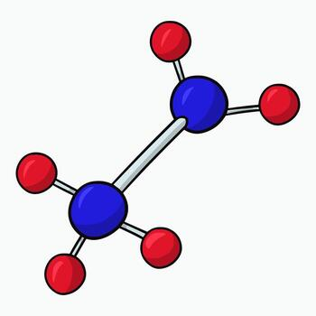

⚗️
Apa itu Senyawa Kimia?
Semua benda di sekitar kita tersusun dari materi. Materi bisa berupa unsur, senyawa, atau campuran.
Definisi
Senyawa kimia adalah zat murni yang terbentuk dari dua atau lebih unsur yang bergabung secara kimia dengan perbandingan tertentu dan tetap. Senyawa punya sifat yang berbeda dari unsur-unsur pembentuknya.
Contoh: Air (H₂O) = Hidrogen (gas mudah terbakar) + Oksigen (gas pendukung api) → tapi hasilnya adalah cairan yang memadamkan api!
— Tingkatan Materi —
Unsur
Zat murni yang tidak bisa dipecah lagi secara kimia. Terdiri dari satu jenis atom.
Contoh: H, O, Na, Cl, C
Senyawa
Gabungan dua atau lebih unsur dengan ikatan kimia. Punya rumus kimia tetap.
Contoh: H₂O, NaCl, CO₂, C₁₂H₂₂O₁₁
Campuran
Gabungan dua atau lebih zat tanpa ikatan kimia. Bisa dipisahkan secara fisika.
Contoh: Air garam, udara, tanah
— Jenis Ikatan Kimia —
 Ikatan Ion
Ikatan Ion- Terjadi antara logam dan nonlogam
- Elektron berpindah dari satu atom ke atom lain
- Biasanya membentuk kristal padat dengan titik leleh tinggi
NaCl (garam dapur), NaOH (soda api)

Ikatan Kovalen- Terjadi antar nonlogam
- Elektron dipakai bersama-sama
- Bisa berbentuk gas, cair, atau padat pada suhu ruang
H₂O (air), CO₂ (karbon dioksida), C₁₂H₂₂O₁₁ (gula)
— Kenapa Ini Penting? —
Produk-produk yang kita pakai sehari-hari — sabun, deterjen, obat, pasta gigi, pembersih lantai — semuanya adalah campuran senyawa kimia yang dirancang untuk tujuan tertentu.
Memahami senyawa di balik label produk membantu kita:
- Tahu apa yang kita pakai di tubuh dan rumah kita
- Menghindari kombinasi bahan yang berbahaya
- Memilih produk yang lebih ramah lingkungan
- Memahami cara kerja setiap produk secara ilmiah